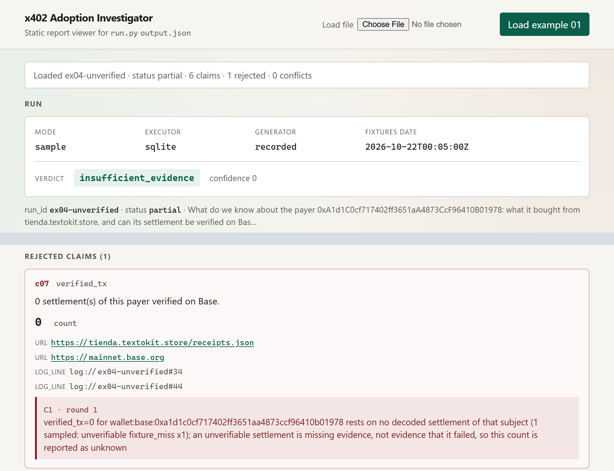

A multi-agent system that answers "how real is x402 adoption?" and proves every number it says: each claim links to a URL with the hash of the bytes fetched, a Base transaction, or a line of its own log.
x402 = pay-per-call over HTTP 402 Payment Required, settled in USDC on Base.
Team Automata · Martin Pisacreta (solo, Argentina) · Zetaris · Meterless · built with Claude Code and Cursor Agent
User: the operator of an autonomous agent that sells or buys over x402 and must decide where the real demand is. Asked how many paid endpoints one store has, three sources say 17, two say 19 and 36, and none of them says why.
| Source | What it measures | Endpoints for tienda.textokit.store |
|---|---|---|
| CDP Bazaar search | listed resources, capped at 20 results | 17 |
| Store openapi.json | declared paid operations | 17 |
| Agent402 | paid tools (of 34 tools) | 17 |
| vet402 | resolved endpoints | 19 |
| x402-trust | keyword search matches | 36 |
Activity disagrees too: Bazaar 30-day counters sum to 60 calls, the seller's receipts list 77 settled sales, and 56 of them were paid by the seller itself.
Bazaar, the seller's receipts, Base RPC, x402-trust, Agent402 and vet402 each measure a different thing on a different window.
Settlements are checked on Base by decoding the USDC Transfer log, never trusting tx.from, which is the facilitator.
When sources differ, the answer carries a Conflict object with each value, its measurement basis and why they differ.
Sources go down mid-run. They become explicit "unavailable" entries with a logged recovery, never silent zeros.
Input: one JSON question
{"run_id": "ex01-seller-audit",
"input": {"question": "How real is the adoption of
tienda.textokit.store? Who pays, how much,
do they come back, and why do registries
disagree about it?"}}
Output: one JSON envelope and a Markdown report
Every metric has a committed SQL query and a pure Python reducer over the same exports. A number survives only if both exist and agree (rule C2); a mismatch stays as an open Conflict.
Deadline, fetch, SQL, model-call and critic-round budgets. Every handoff, fetch, sql, claim, conflict, critique, retry and recovery line goes to logs/<run_id>/run.jsonl.
Planner, Writer and the Critic's second opinion can call an OpenAI-compatible model. No model key was used in any committed run, so they ran on rules and templates.
guard network disabled in sample mode (socket.connect patched) handoff planner → collector plan (10 items, sha256 abce43a7…) handoff collector → keeper observations (9, sha256 debfb264…) recovery collector fixture_miss on a Base receipt: settlement marked unverifiable handoff verifier → keeper chain_facts (1) handoff keeper → analyst query_ids (13) conflict k01 endpoint_count_for_host five sources, five measurement bases conflict k02 calls_30d_for_host Bazaar 30-day counter vs seller receipts handoff writer → critic answer critique round 1 C1…C7 accept 19 claims · narrative pass: 62 numbers mapped, 0 unsourced handoff keeper → hmem claims (19) · memory feedback written
Condensed from the 108 JSON lines of example 01: 11 handoffs, 17 fetches, 13 SQL queries, 8 critiques, 5 recoveries, 2 conflicts.
claim c07 verified_tx = 0 sql 0 · reducer 0 critique round 1 C1 reject c07: no decoded settlement of 0xa1d1…1978 (1 sampled: unverifiable, fixture_miss) critique round 1 B revise: sentences cite c07 handoff critic → writer issues (5) recovery writer narrative_trimmed: c07 left out of the answer and named critique round 2 C1…C7 accept 6 · B accept result partial · 6 accepted · 1 rejected output verdict insufficient_evidence (by rules)
SQL and reducer agree on 0, but nothing was decoded for this wallet. Zero verified would be a number about missing data, so the Critic reports it as unknown.
Same question as example 03, another external payer of the same store. Live, its settlement is verified at block 52,914,075.
Condensed from the 83 JSON lines of example 04: 13 handoffs, 20 critiques, 6 recoveries, 2 critic rounds.
Executor, SQL sha256, rows, time and tables with source URLs in sql.jsonl; every REST call in zetaris.jsonl. --require-zetaris turns any fallback into an error.
3 of the 22 queries (q20 to q22) were added after the live session and have run on SQLite only.
77 sales, 56 paid by the seller's own wallets; 21 external sales by 4 payers, 0.044 USDC in total.
28,462 Bazaar resources on 2,680 hosts; the top host holds 29.5% of 824,796 calls in 30 days.
One purchase of 0.001 USDC, its settlement decoded and verified on Base against the receipts.
One purchase of 0.001 USDC; "0 verified" rejected by the Critic, balance and nonce unavailable.
The honest finding for our own store: most of its sales were paid by its own wallets. The system says so, with the proof.

Run header with the mounts, accepted claims with their evidence links, rejected claims with the Critic's reason, and conflicts with each source's value and explanation.
Static HTML, no build step, no CDN. Shown: example 04 in sample mode, two crops of one page (header, rejected claims).
git clone https://github.com/martinPisacreta/x402-adoption-investigator cd x402-adoption-investigator python run.py --sample --input examples/ex4.json
No model ran in the committed runs: the model path is implemented and tested offline with an OpenAI-compatible double.
Pre-existing, declared: our own Automata agent and its x402 store tienda.textokit.store (data source only, none of its code here), the Meterless conformance vectors (copied with attribution), the Zetaris platform and the Python standard library.